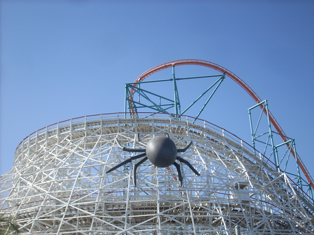
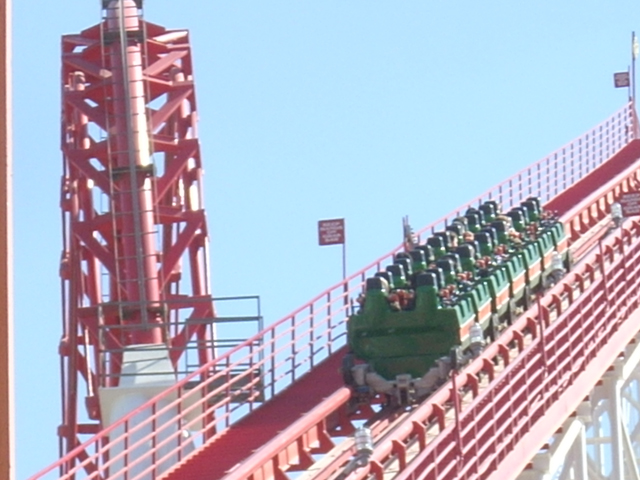
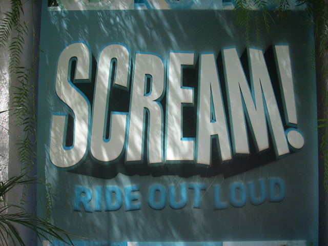
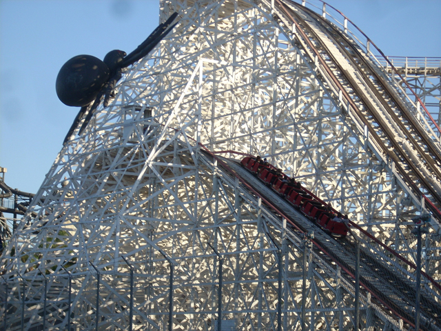
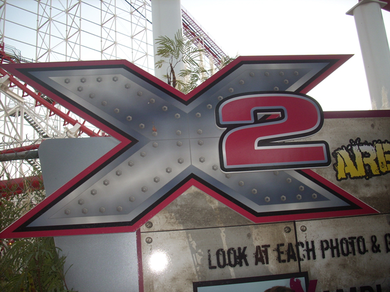
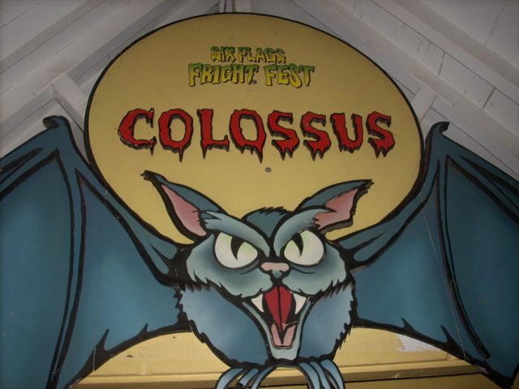
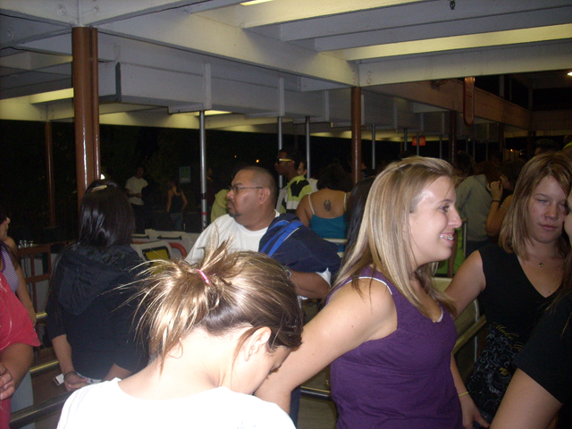

Fall 2008 Photos
Disneyland Resort Santa Monica Pier Six Flags Magic Mountain

The final park on the trip, was Six Flags Magic Mtn. And luckily, it was open both times I went! (Yes, I went twice and am combinding the two days into one update.)
Anyways, we're at the SFMM entrance and we're actually going to get let in the park today! YAY!!!!!

The first ride of the day turned out to be Viper, which ran quite good today.
 While Superman isn't the best ride in the world, It's just good to be at an actual ride. Plus Superman was quite fast today.
While Superman isn't the best ride in the world, It's just good to be at an actual ride. Plus Superman was quite fast today.
Dude!! Free Fudge at Six Flags Magic Mountain, why didn't I know about this all the other times I was here!!!
What's that I see on Tweety?
 Ah. The sign of quality. But hey, it could be worse. It could've come from the f**king Santa Monica Pier.
Ah. The sign of quality. But hey, it could be worse. It could've come from the f**king Santa Monica Pier.
 Tatsu recently has been quite good. It's probably just the SUF experience that makes it better.
Tatsu recently has been quite good. It's probably just the SUF experience that makes it better.
I highly recommend you do this! Even if it means giving up laundry for the week! Smelly clothes are temporary, the laughter of having the bastard you soaked walking up and yelling at you is forever.
Goliath heading for the trees,
 Insert Andrew's Pirate Ship Wet Dream Caption here.
Insert Andrew's Pirate Ship Wet Dream Caption here.

Our next ride was indeed Scream.
 Oh My God. Scream was running GREAT today. And by great, I don't mean better than usual, I mean it was running LIGHTNING FAST AND CRAZY AS HELL!!!!
Oh My God. Scream was running GREAT today. And by great, I don't mean better than usual, I mean it was running LIGHTNING FAST AND CRAZY AS HELL!!!!
 The whip in the Heartline Spin was so powerful it was almost Kumba like. You freaking FLEW through it.
The whip in the Heartline Spin was so powerful it was almost Kumba like. You freaking FLEW through it.
I think there are still parts of Six Flags Magic Mtn that they still need to clean up. I don't feel comfortable with 37 years worth of dirt and crap above me.
While it was just normal bumper cars during the day, at night, it was like a disco with all the shiney lights.

Collosus may be fun foreward, but just wait til it goes backwards.

Ok, now before Fright Fest, we just had to get on X2 and feel all it's awsomeness!
 And heres a cool Viper shot that here because it looks cool.
And heres a cool Viper shot that here because it looks cool.

And now it's time for one of the best parts of Fright Fest.
COLLOSUS BACKWARDS!!!!!!
Dude. You guys are coaster pansys. Grow some balls and do it backwards!!!

Most people however, aren't coaster pansies and have the balls to do it Backwards. And as for the rest of Fright Fest, there are no pictures to post in the update. However, I did take video that night. So if you want to see the rest of our time at Fright Fest, click here. Hope you enjoyed this update, and once again, I apologize for taking so long in getting this up.
Home